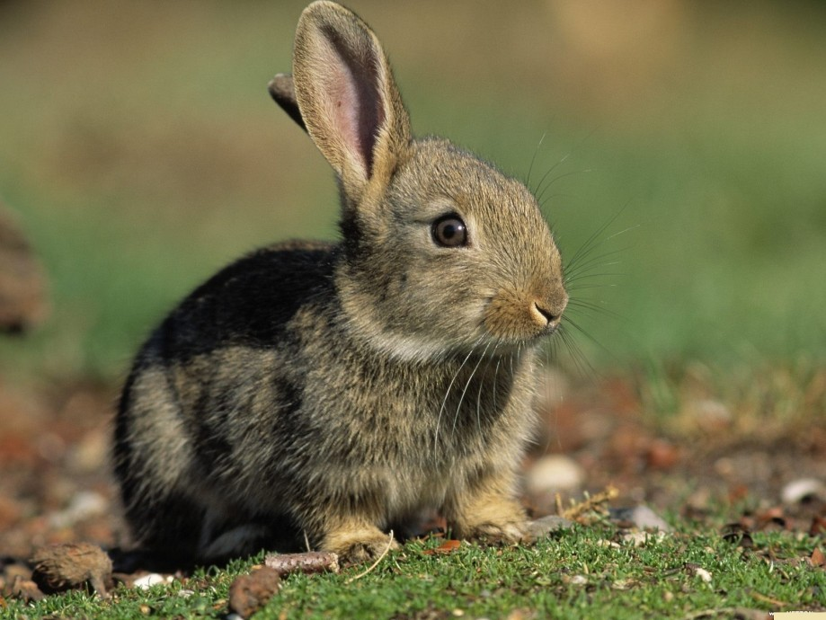

Кролики домашние
происходят от кролика дикого, предположительно одомашненного в Европе ок. 3 тыс. лет назад. Большинство домашних К. значительно крупнее кролика дикого: длина тела К. крупных пород достигает 70 см; масса может превышать 4,5 кг (макс. ок. 8 кг у породы фламандский великан); могут сильно отличаться от своего родоначальника по облику (особенно К. декоративных пород). Окраска белая, голубая, серая, коричневая, серебристая, чёрная и др. Продолжительность жизни 7–10 лет, период хозяйств. использования племенных животных 1–2 года. Содержат К. в индивидуальных или групповых клетках на открытом воздухе или в помещениях. Осн. корма: зелёная трава, корнеплоды, морковно-капустный силос, мелкостебельчатое сено, зерно и отходы зернового произ-ва, комбикорма, мясокостная и рыбная мука; в рацион добавляют поваренную соль, мел; используют также свежие пищевые отходы. К. могут размножаться в течение всего года. Крольчихи достигают половой зрелости к 3–4 мес, случают их с 5–6 мес (применяют также искусств. осеменение). Живая масса новорождённых крольчат 40–80 г. Среднесуточный прирост живой массы в период от 10- до 30-дневного возраста 30–40 г. Молодняк отсаживают от крольчих по достижении возраста 30, 45 или 60 сут. (О пром. разведении К. см. в ст. Кролиководство.)

К. разводят для получения мяса, шкурок и пуха. Мясо К. отличается высокими вкусовыми и диетич. качествами. По сравнению с мясом др. с.-х. животных содержит меньше жиров (особенно насыщенных), коллагена, эластина, холестерина, является низкокалорийным продуктом (699 кДж в 100 г); рекомендовано детям, пожилым людям, при заболеваниях сердечно-сосудистой системы, желудочно-кишечного тракта, при избыточной массе тела и др. Убой К. на мясо проводят в возрасте 60–120 сут при живой массе 1,8–3 кг, на мясо и шкурки – в возрасте 120–150 сут (живая масса 2,8–4 кг); убойный выход 47–60%. Шкурки К. являются сырьём для лёгкой пром-сти, лучшие шкурки зимние, после осенней линьки. Кожу К. используют для изготовления высокосортного шевро, лайки, замши. От К. пуховых пород (ангорская, белая пуховая порода и др.) получают тонкий лёгкий пух длиной 5–15 см с низкой теплопроводностью, не содержащий жиропот, хорошо впитывающий влагу. Навоз К. богат калием и азотом, является ценным органич. удобрением (от одного взрослого кролика получают до 100 кг навоза в год). К. – одни из самых распространённых лабораторных животных. К. декоративных пород пользуются популярностью в качестве домашних питомцев.